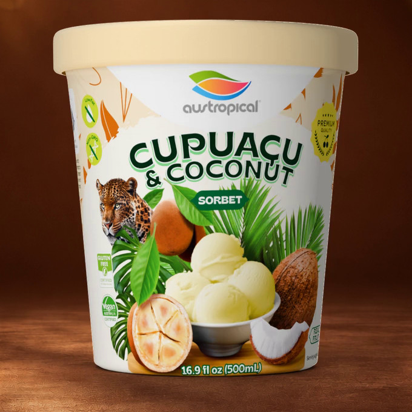

Cupuaçu: the Amazon fruit in our Cupuaçu & Coconut sorbet
Cupuaçu is an Amazon fruit with a brown shell and creamy white pulp, a relative of cacao. What it is, where it grows, and how it ends up in our sorbet.

Cupuaçu is not a fruit you will find in a US grocery store. In the Brazilian Amazon it is an everyday one. This post covers what it is, where it grows, what it looks like, and how it ends up in our Cupuaçu & Coconut sorbet.
What is cupuaçu?
Cupuaçu (koo-poo-ah-SOO) is the fruit of a tree from the Amazon. Its scientific name is Theobroma grandiflorum. It is a relative of cacao, the tree that gives us chocolate, and it grows in the same forest as açaí. The two are different kinds of plant: açaí is a palm, and cupuaçu is a broadleaf tree in the cacao family.
In Brazil the fruit is spelled cupuaçu. In English search it is usually written cupuacu, without the cedilla. Same fruit.
Where does cupuaçu grow?
Cupuaçu grows in the Brazilian Amazon, in the forest and on farms. It is grown and eaten across northern Brazil, and our sorbet is made there, in the Brazilian Amazon.
What does cupuaçu look like?
The fruit is large and oval, with a hard brown shell. Inside is a creamy white pulp wrapped around the seeds. The pulp is the part that is eaten. In the Amazon it goes into juices, desserts and ice creams, and it is usually sold as frozen pulp rather than as whole fruit.
What does cupuaçu taste like?
Tropical. That is the one word we will use. Taste notes written by other people are not much help with a fruit you have never tried, so we would rather you taste it. The sorbet is a good place to start.
What is in Cupuaçu & Coconut sorbet?
The ingredient list, as printed on the pack: Cupuaçu (36%), Filtered Water, Cane Sugar, Coconut Milk Powder (3%), Coconut (2%), Stabilizers (Pectin, Locust Bean Gum).
Cupuaçu is first on the label, at 36%. Coconut comes in two forms, coconut milk powder (3%) and coconut (2%). Pectin and locust bean gum hold the texture. That is the whole list: six lines.
Cupuaçu & Coconut is certified vegan (Vegan Australia) and kosher (Kosher Australia). It is not certified organic. It is a pasteurized sorbet, made in Brazil.
Is cupuaçu the same as açaí?
No. They share a forest, not a family. Açaí is a small, dark purple fruit from a palm. Cupuaçu is a large, brown-shelled fruit with white pulp, from a tree in the cacao family. Açaí sorbet is deep purple. Cupuaçu pulp is creamy white. If you have only ever had açaí, cupuaçu is a different fruit, not a variation on the same one.
How is cupuaçu sorbet served?
The same way as the rest of the range. It is ready to eat, with no preparation, served frozen. Scoop it on its own, or put a scoop beside a scoop of açaí for a two-color bowl. It also works in smoothies, shakes and dessert recipes.
It comes in three formats: a 500 mL pint (16.9 fl oz), a 250 mL Grab'n Go cup with a wooden spoon, and a 10.2 kg foodservice bucket. The pint and cup have a pale cream lid, so it is easy to spot in the freezer. Keep it frozen at 0 °F (−18 °C) or below.
When can you buy cupuaçu sorbet in the US?
Our first container carries Organic Açaí Original Sensation and Organic Mango. Cupuaçu & Coconut follows with the rest of the range. If you run a café or a campus dining program, the 10.2 kg bucket is set up at Vistar; ask us for the spec sheet.
Related: Cupuaçu & Coconut · All ten flavors · Serving ideas
Austropical açaí and tropical fruit sorbets come to US freezers in March 2027. The first container carries Organic Açaí Original Sensation and Organic Mango; the rest of the range follows.
Açaí Zero Sugar: Not a low calorie food. Product of Brazil.